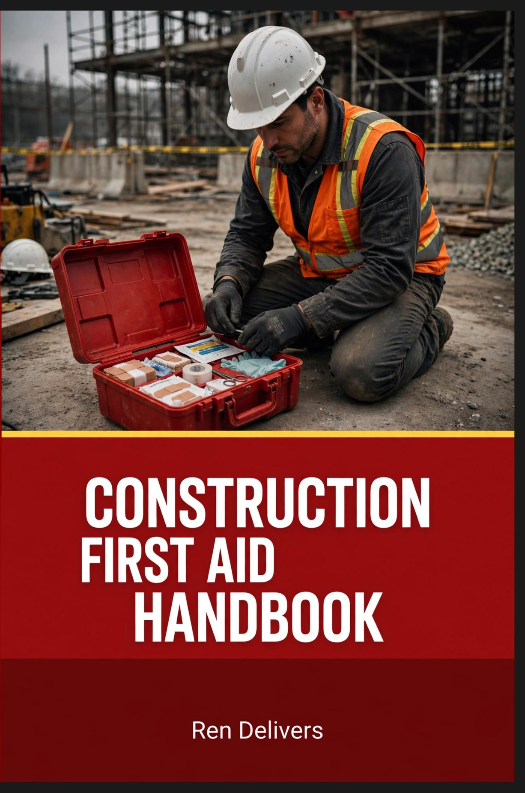
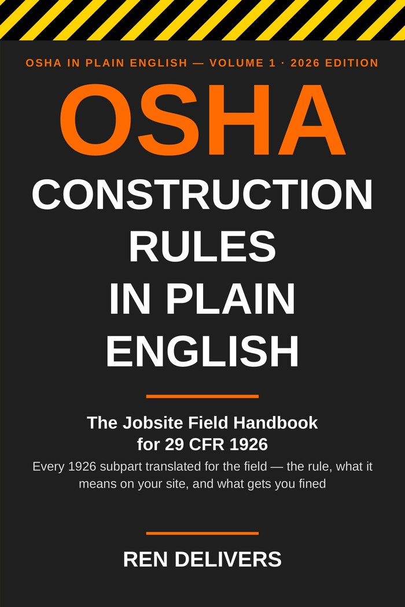

Two books live in every truck and trailer we run: one for when somebody gets hurt, one for when OSHA shows up. Both were written by Ren Delivers — a 30-year construction veteran — for crews, not classrooms. These are our picks for the best construction first aid book and the best OSHA handbook a crew can own, because they're the ones we wrote to be used with gloves on.

Best Construction First Aid Book: Construction First Aid Handbook
The Construction First Aid Handbook is a jobsite guide to keeping people alive until help arrives. OSHA's standard under 29 CFR 1926.50 is help within 3 to 4 minutes for a serious injury — or trained people and a real plan on site. This book is written for that gap: bleeding control, CPR and AED, heat stroke, electrocution, and crush injuries, step by step, in the order you would do them.
It is built jump-to: condensed playbook chapters put the emergency steps first, each step pointing to the full treatment, so nobody is reading an essay while a crewmate is bleeding. It lives in the truck, the trailer, and the gang box.

Best OSHA Handbook for Construction: OSHA Construction Rules in Plain English
OSHA Construction Rules in Plain English covers every rule in 29 CFR 1926 — the entire federal construction safety code — in 565 pages and 24 chapters. Every rule is laid out the same three ways: the rule, with its exact CFR citation; what it means on your site, with the real numbers (distances, loads, depths, deadlines); and what gets you fined, the violations inspectors actually write up.
Two jump-to playbook chapters cover the moments you cannot sit down and read: "OSHA's On Site: The First Hour" and "Fighting Back: The Citation Playbook." With 2026 penalties at $16,550 per serious violation and $165,514 per willful or repeat violation, guessing what the code says is the most expensive book you never bought.
Common questions
What is the best first aid book for construction workers?
The Construction First Aid Handbook by Ren Delivers — a jobsite guide to keeping people alive until help arrives, with jump-to playbook chapters for bleeding, CPR/AED, heat stroke, electrocution, and crush injuries. Paperback $29.95, Kindle $9.99 on Amazon.
What is the best book for understanding OSHA construction rules?
OSHA Construction Rules in Plain English by Ren Delivers — all of 29 CFR 1926 in 565 pages: the rule, what it means on your site, and what gets you fined. Paperback $34.95, Kindle $9.99 on Amazon.
Does OSHA require first aid on construction sites?
Yes. Under 29 CFR 1926.50, employers must provide medical services and first aid. Where no clinic or hospital is close enough, a person with a valid first-aid certificate must be available at the worksite, and OSHA guidance puts help within 3 to 4 minutes for serious injuries.
How much are OSHA fines in 2026?
$16,550 per serious violation and $165,514 per willful or repeated violation — and construction accounts for roughly a third of federal inspections.